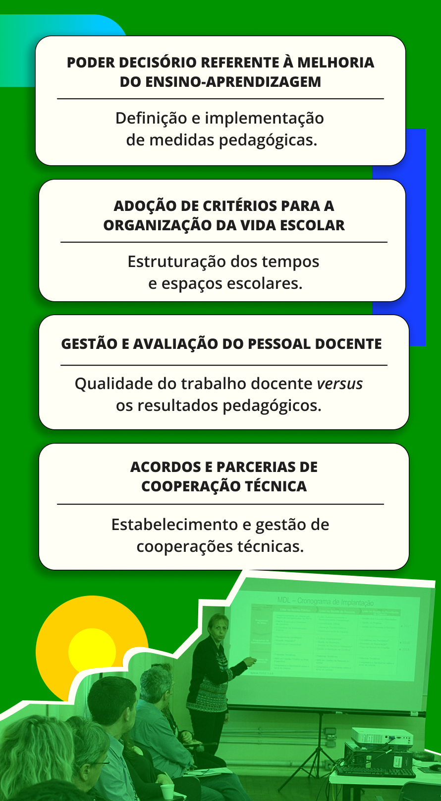

Dimensão Pedagógica
A segunda dimensão – pedagógica – está ligada à identidade da instituição, à sua missão social, ao público, aos resultados e, por isso, ao projeto político-pedagógico em sua essência. Para Neves (1995), a dimensão pedagógica tem como prioridade a melhoria da qualidade do ensino e o atendimento às necessidades básicas de aprendizagem em seus diversos níveis.

Título: Dimensões do Pedagógico na Gestão
Fonte: Porto Alegre (2017), Neves (1995).
Elaboração: Prosa (2025d).
Nessa dimensão, entra com força o trabalho pedagógico dos servidores da instituição, desenvolvido como ações, relações e transformações: as ações dos sujeitos envolvidos, tais como diretores, professores, técnicos administrativos em educação e estudantes; as relações como as estabelecidas entre o planejamento, o diálogo de professores e alunos, bem como o currículo em disputa e as vivências; e as transformações dos agentes participantes, os quais: professores, estudantes e sistemas institucionais e políticos (Maraschin, 2015).
A dimensão pedagógica é, muitas vezes, a que mais fica esquecida nas instituições, sendo delegada ao setor de ensino ou apenas aos professores, deixando de lado o viés educativo de todos os processos. A depender da concepção de educação, de ensino e de avaliação da instituição e dos servidores, será possível caminhar para a democracia e para a gestão democrática ou para o reforço de uma instituição que não reflete sobre seus processos e apenas promove uma educação bancária, fragmentada e classificatória.
Ao promover a centralidade na dimensão pedagógica e no trabalho pedagógico, é garantido aos educadores “a liberdade de conceber, planejar e executar o ensino de forma orgânica e tecnicamente consistente” e à própria escola “as condições adequadas de realizar o ensino de acordo com suas peculiaridades políticas e pedagógicas” (Paro, 2015, p. 69). Uma escola que vive a dimensão pedagógica contribui para a formação integral dos estudantes ao promover espaços de participação e reflexão coletiva, além de assumir o trabalho como princípio educativo e a pesquisa como pressuposto pedagógico. Nesta última, há processos contínuos de elaboração e discussão do projeto político-pedagógico, bem como compromisso com o ensino de qualidade, além de replanejamento do processo educativo e, sobretudo, da valorização dos professores e dos diferentes profissionais e seus trabalhos. Por consequência, o estudante faz-se sujeito-autor, processando seu aprendizado e educando-se, ora pelos conhecimentos construídos, ora pelas vivências e transformações promovidas.
Ainda, com a assunção do trabalho como princípio educativo e da pesquisa como pressuposto pedagógico, as avaliações são contínuas. Quando a dimensão pedagógica está no centro das práticas institucionais, a avaliação deixa de ser um mecanismo punitivo ou classificatório. Uma instituição que entende e valoriza essa dimensão compreende a avaliação como parte de todo o processo de formação dos sujeitos e não a resume a notas e conceitos, fazendo com que, ao experienciar avaliações contínuas, integradas e que fazem parte de um processo, todos comprometam-se em ensinar e em aprender. Assim, em vez de gerar insegurança e estresse em docentes e estudantes, principalmente nos finais de semestres e anos letivos, a avaliação torna-se uma ferramenta de aprendizado contínuo, integrada às experiências docentes e discentes.
Dimensão Política
A terceira dimensão – política – recupera questões fundamentais da instituição escolar, componentes de sua função social. Aqui entra um ponto muito importante na EPT, que são os princípios e as finalidades da rede ou sistema em que se está inserido – além da perspectiva filosófica e humana do processo educativo. A qualidade política é uma condição essencial para a participação, estando ela, segundo o professor Pedro Demo (apud Veiga, 1995), relacionada aos objetivos, valores e conteúdos, referindo-se à capacidade do sujeito de se construir e atuar na história, em consonância com os propósitos históricos da sociedade.
Portanto, a dimensão política integra-se à pedagógica e reflete sobre o papel e a função da instituição e dos seus gestores, podendo fazer da instituição mais uma que apenas implementa as políticas vindas de cima ou a que trabalha com a sociedade para a transformação e a melhoria das realidades. Vive-se a dimensão política da gestão quando todos os servidores, estimulados pelos gestores, refletem sobre a função do seu trabalho, sobre a missão e os valores da instituição em consonância com os objetivos legais e referências críticas do campo da EPT.
Essa dimensão se alinha à construção de um ambiente educacional que favorece a participação ativa e o desenvolvimento integral dos estudantes, tendo como objetivo transformar a escola em um espaço de participação cidadã. Assim, a dimensão política promove uma cultura de autonomia e de compromisso com a justiça social, no qual os processos de ensino e de tomada de decisão refletem o valor da coletividade, ajudando, inclusive, na construção de uma gestão democrática.
No entanto, para que essa dimensão seja efetiva, é essencial que ela esteja articulada às demais, especialmente com as dimensões pedagógica e administrativa, possibilitando uma gestão integrada e coerente com os objetivos educativos. A gestão política cria condições para práticas pedagógicas que valorizam a pesquisa e o desenvolvimento crítico dos sujeitos, contribuindo para uma educação que não apenas forma para o trabalho, mas que também capacita cidadãos críticos e conscientes de seu papel transformador na sociedade.
Dimensão Financeira
A quarta dimensão – financeira – diz respeito aos recursos necessários e financeiros para a operacionalização da instituição. Não é possível pensar nas outras dimensões sem considerar os recursos necessários para implementar e garantir a sobrevivência da instituição, pois uma instituição sem o mínimo de recursos necessários desvia sua atenção do que é essencial para algo que funciona apenas como acessório (Paro, 2016).
De acordo com Neves (1995), a dimensão financeira considera a gestão dos recursos patrimoniais, dos recursos via sistema educacional, do que é orçamento próprio e da capacidade de negociar e atrair parcerias e recursos externos que possam vir também a contribuir com o processo educativo.
.png)
Título: Vertentes do eixo Financeiro
Fonte: Neves (1995), Volpe (2016).
Elaboração: Prosa (2025e).
A dimensão financeira precisa ser constantemente incentivada pela gestão, no sentido de que todos os servidores devem atrair recursos com frequência, por via de projetos de ensino, pesquisa, extensão ou, ainda, de desenvolvimento institucional. Além disso, o desenvolvimento da dimensão financeira precisa ser informado regularmente à comunidade externa e interna com um viés de transparência, servindo para incentivar novas possibilidades e investimentos.
Dimensão Comunicacional
A quinta dimensão – comunicacional – é fundamental e está diretamente ligada a todas as outras. Essa dimensão é essencial tanto no ambiente interno da instituição, promovendo transparência nas ações e processos da direção e sua comunicação aos servidores, quanto no ambiente externo, ao divulgar o que é desenvolvido internamente. Isso contribui para despertar o interesse da sociedade em fazer parte dessa comunidade educativa, seja participando dos cursos como estudantes, seja como parceiros em projetos.
Observamos que a dimensão comunicacional é a menos trabalhada nas instituições, deixando uma lacuna significativa principalmente nas relações entre os servidores e entre a instituição e a comunidade. Essa lacuna impacta diretamente o engajamento e a identidade institucional, tornando essencial a implementação de estratégias que deem visibilidade às ações da instituição. Uma estratégia de comunicação na EPT que pode ser posta em prática é realizar constantemente a divulgação de histórias de egressos, de estudantes desenvolvendo projetos, dos ambientes e das vivências. Esta divulgação promoverá o desejo de estar na instituição.